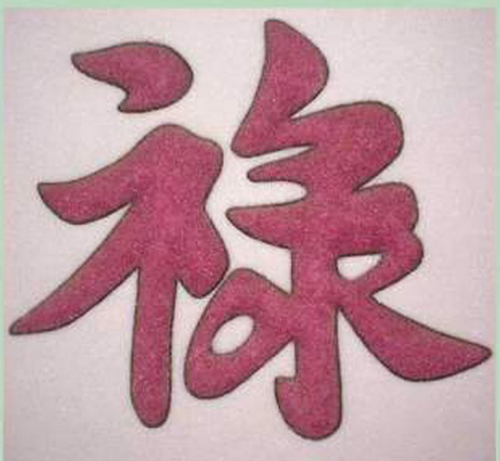
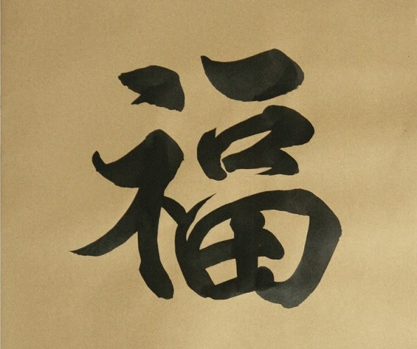
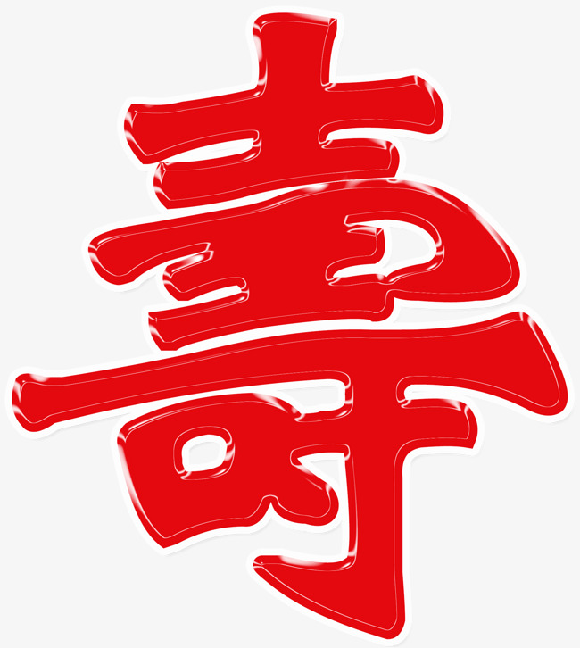
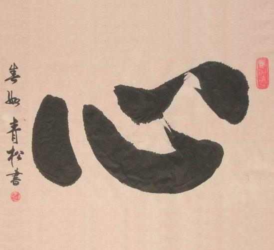
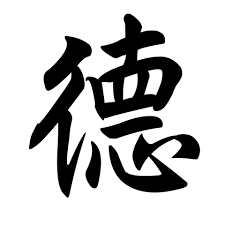
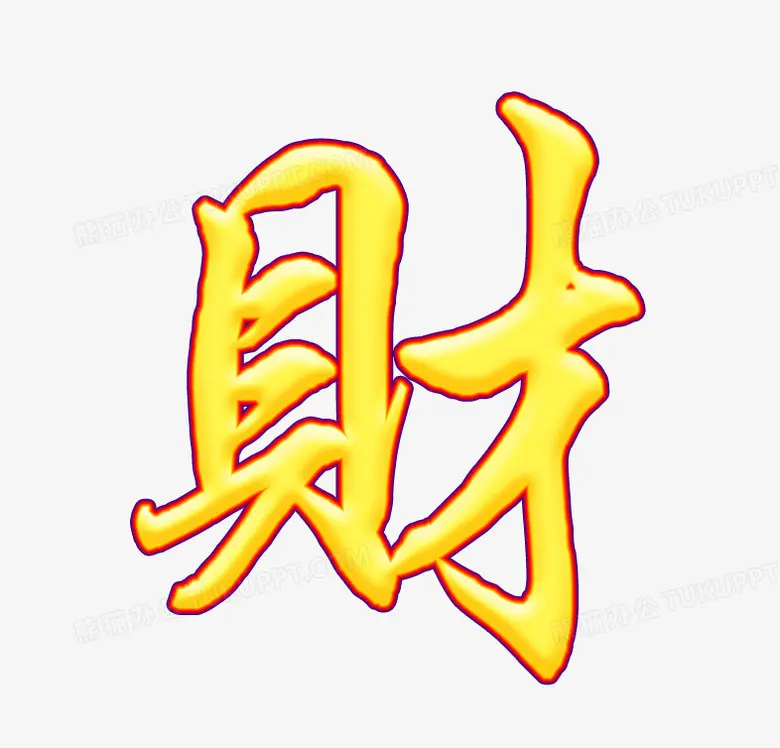
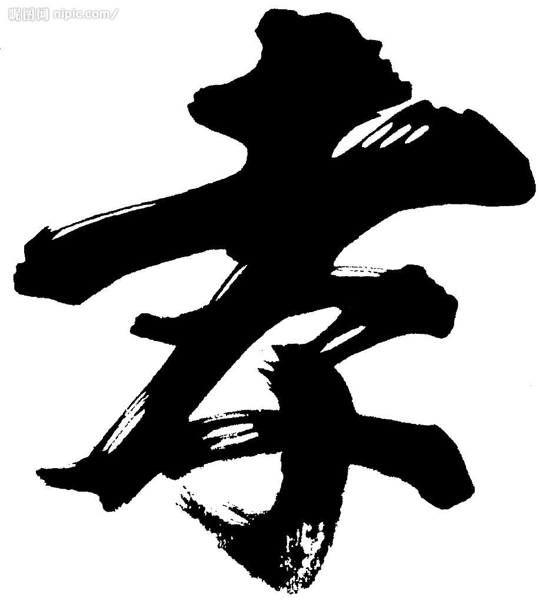
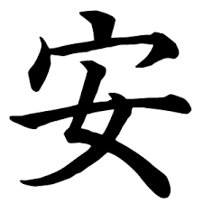

Chữ số "1"
Xin chữ "Lộc" biểu trưng cho tài lộc
Những người bốc ra chữ Lộc muốn có một năm làm ăn phát tài, phát lộc. Mọi người tặng nhau chữ lộc như là lời chúc may mắn, thành đạt tới người nhận. Vì vậy chữ lộc được rất nhiều người lựa chọn xin vào đầu năm để treo trong nhà.

Chữ số "2"
Xin chữ "Phúc" để cầu hạnh phúc
Chữ Phúc tượng trưng cho hạnh phúc, may mắn, sung sướng, thể hiện mong muốn có một cuộc sống ấm no hạnh phúc cho gia chủ. Đã từ lâu chữ phúc đã là biểu tượng phổ biến được trang trí trong nhà của người dân Việt.

Chữ số "3"
Xin chữ "Thọ" để chúc thọ ông bà
Chữ Thọ biểu tượng cho sự sống lâu trăm tuổi, người xin chữ này thường mong muốn có một cuộc sống ấm no, mạnh khỏe, tránh được tai ương. Chữ thọ thường được các bạn trẻ xin về để chúc thọ ông bà, cha mẹ với mong muốn gia đình mạnh khỏe, sung túc, và thể hiện lòng thành kính với bậc bề trên.

Chữ số "4"
Xin chữ "Tâm" với hàm ý chỉ sự yên bình
Tâm mang một ý nghĩa Phật giáo sâu sắc trong đời sống tâm linh của người Việt Nam. Muốn con người tu dưỡng đạo đức để cho tâm được thanh tịnh, xóa hết dục vọng, ích kỷ, hận thù, để có một cuộc sống thanh thản, yên bình.

Chữ số "5"
Xin chữ "Đức" để răn dạy bản thân
Chữ Đức là biểu trưng cho đạo đức của con người, nét đẹp của con người. Người xin chữ đức vốn để răn dạy chính bản thân mình cần phải sống thực với chính bản thân mình, làm đúng theo lương tâm mình để tâm hồn được thanh thản.

Chữ số "6"
Chữ "Tài" chứng tỏ khả năng
Chữ Tài biểu trưng cho tài năng, là khả năng làm được một việc chất lượng nào đó, thể hiện mong muốn thành đạt trong cuộc sống của người xin chữ, chữ tài cũng là lời chúc thành đạt của những người muốn xin chữ này để đem tặng.

Chữ số "7"
Xin chữ "Hiếu" đầu năm dành tặng ông bà
Chữ Hiếu là loại chữ phổ biến được xin đầu năm, người xin chữ thường dùng để tặng ông bà, cha mẹ, để thể hiện sự biết ơn về công ơn sinh thành, nuôi dưỡng khó nhọc của ông bà, cha mẹ, đồng thời cũng thể hiện tấm lòng quan tâm, chăm sóc của con cháu.

Chữ số "8"
Chữ "An" tượng trưng cho bình an
Chữ An tượng trưng cho sự bình an, với mong muốn một cuộc sống an lành, hạnh phúc. Chữ An là loại chữ được xin nhiều nhất để treo trong nhà. Từ xưa, không chỉ là được xin trong ngày Tết, mà chữ An đã là biểu tượng thường được thêu lên tranh để làm vật trang trí trong nhà của nhiều gia đình.
